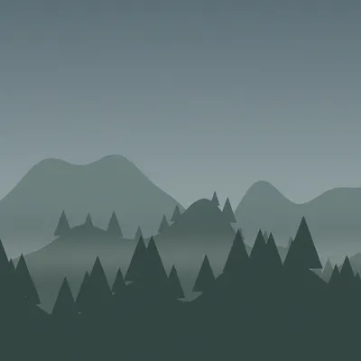

Альбом, 8 треків
Полонина
Гірський туман
Трек-лист
| Сторона | № | Назва | Тривалість | Прев'ю |
|---|---|---|---|---|
| A | 1 | Туман над Говерлою | ||
| 2 | Смерекова колискова | |||
| 3 | Полонина вночі | |||
| 4 | Дзвоники отари | |||
| B | 5 | Черемош | ||
| 6 | Ватра | |||
| 7 | Зоряна стежка | |||
| 8 | Світанок у Ворохті | |||
| Разом: 8 треків | ||||
Про альбом
«Полонина» — нічна подорож Карпатами: від туману над Говерлою до світанку у Ворохті. Синтезаторні пади записано разом із польовими записами вітру й дзвоників отари. Сторона A звучить тихіше й повільніше, сторона B світлішає ближче до ранку.
Інші релізи лейблу
-

Ватра
-

Світанок
-

Дощ
-

Сніг
-

Полонина. Ремікси